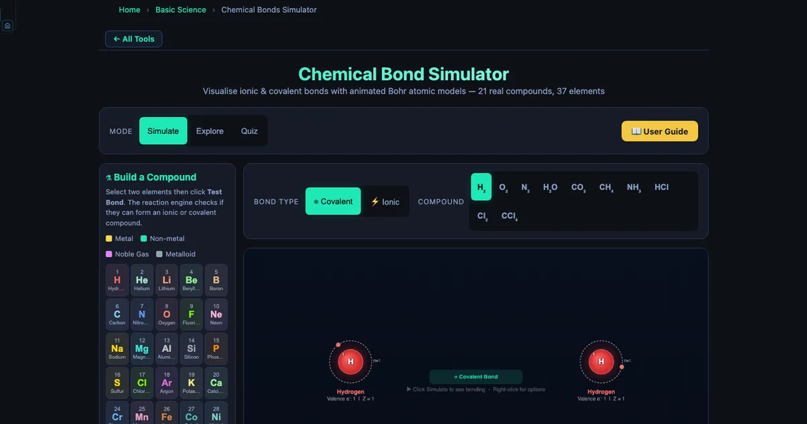

Interactive Periodic Table Simulator for Teaching — Build Your Atom Guide
- An interactive periodic table simulator teaches bonding by storing each element's atomic number Z, full Bohr shell configuration (e.g. Na: [2,8,1]), group number, Pauling electronegativity, ion charge, and type, then animating exactly how electrons transfer or are shared between any two elements.
- Bond type follows the electronegativity-difference rule: ΔEN > 1.7 is ionic, 0.5–1.7 is polar covalent, and < 0.5 is nonpolar covalent.
- The Build-a-Compound module covers 37 elements (H to Pb) with four modes — Explore, Simulate (21 presets), Build-a-Compound, and Quiz — so students predict a bond, click Test Bond, and watch an animated Bohr model confirm or correct their prediction.
Ask a class of Year 10 students to explain why sodium and chlorine form a compound but neon and argon don’t. Half the class will say “because the periodic table says so.” That’s not wrong — but it’s not understanding either. The periodic table is a map of electron configurations, and every bonding rule on it is a consequence of atoms trying to fill their outermost shells. The trouble is that electron shells are invisible. A simulator that makes them visible, interactive, and testable changes the conversation entirely.
The Chemical Bonds Simulator covers 37 elements from hydrogen to lead, stores the full Bohr electron configuration for each one, and lets students pick any two elements and “test the bond” to see what happens. That last feature — the Build-a-Compound module — is the centrepiece of this guide.
What’s in the Simulator — 37 Elements, Four Modes
The simulator’s element database stores six properties for each element:
- Atomic number Z — the number of protons in the nucleus, which defines the element.
- Electron shell configuration — the exact number of electrons in each shell. Sodium is \([2, 8, 1]\); chlorine is \([2, 8, 7]\); neon is \([2, 8]\) — a complete outer shell.
- Group number — which column of the periodic table the element occupies (Group 1 through 18).
- Pauling electronegativity (EN) — how strongly the element attracts electrons in a bond. Fluorine leads at EN = 3.98; caesium-analogue potassium sits at EN = 0.82.
- Typical ion charge — the charge the element adopts when it forms ions (e.g., Na → Na¹+, O → O²−).
- Element type — metal, nonmetal, metalloid, or noble gas.
The four modes serve different stages of a lesson:
- Explore — concept cards on ionic bonding, covalent bonding, electronegativity, and the octet rule. Use at the start to establish vocabulary.
- Simulate — 21 preset compounds that animate immediately. Use for teacher-led demonstration.
- Build a Compound — student-selected element pairs. Use for exploration and prediction activities.
- Quiz — randomised multiple-choice questions. Use as an exit ticket.
Reading the Periodic Table Through Electron Shells
The periodic table’s structure is a direct consequence of electron shell filling. Period 1 has two elements (H and He) because the first shell holds at most 2 electrons. Period 2 has eight (Li through Ne) because the second shell holds 8. Period 3 also has eight (Na through Ar) because the 3s and 3p sub-shells fill before the 3d. This gives us the most useful rule for introductory chemistry: the group number of a main-group element equals its number of valence electrons.
The simulator makes this tangible. Open it and look at sodium (Group 1, shells \([2,8,1]\)) — one valence electron sitting alone in the third shell, far from the nucleus, weakly held. Then look at chlorine (Group 17, shells \([2,8,7]\)) — seven valence electrons, one slot away from a complete octet, and a high electronegativity of 3.16. You don’t need to explain why they bond. The configuration tells the story.
Noble gases close each period. Helium has shells \([2]\) — a complete first shell. Neon has shells \([2,8]\) — a complete second shell. Argon has shells \([2,8,8]\). Krypton has shells \([2,8,18,8]\). All four have full outer shells and EN listed as null in the simulator database, because electronegativity only applies to elements that form bonds. When students try to build a compound involving a noble gas, the reaction engine returns nothing — a correct and instructive result that reinforces the octet rule directly.
Electronegativity Trends and the ΔEN Bonding Rule
The EN values in the simulator follow the Pauling scale. Across any period, EN increases from left to right (more protons pull electrons more strongly). Down any group, EN decreases (electrons are further from the nucleus, more shielded). These are trends students recite without always understanding — the simulator makes them measurable.
The bonding rule built into the reaction engine:
\[\Delta\text{EN} > 1.7 \;\Rightarrow\; \text{ionic}\quad|\quad 0.5 \leq \Delta\text{EN} \leq 1.7 \;\Rightarrow\; \text{polar covalent}\quad|\quad \Delta\text{EN} < 0.5 \;\Rightarrow\; \text{nonpolar covalent}\]
Have students calculate ΔEN for three pairs before opening the simulator:
- \(\text{H}_2\): ΔEN = \(|2.20 - 2.20| = 0.00\) → nonpolar covalent
- \(\text{H}_2\text{O}\): ΔEN = \(|3.44 - 2.20| = 1.24\) → polar covalent
- \(\text{NaCl}\): ΔEN = \(|3.16 - 0.93| = 2.23\) → ionic
Then have them click Test Bond for each pair. The simulation confirms or corrects every prediction. HF is a useful edge case: ΔEN = 1.78, above the 1.7 ionic threshold, yet HF is a well-known polar covalent molecule. The simulator correctly classifies it as covalent and the discrepancy opens a rich discussion about why rules have exceptions and what electronegativity alone can’t capture.
The most extreme pair in the database is LiF: ΔEN = \(|3.98 - 0.98| = 3.00\). Assign this as the “most ionic” compound for students to find on their own — the answer is always LiF because fluorine is the most electronegative element.

The Build-a-Compound Module — Student-Led Discovery
This is the heart of the simulator for classroom use. Students see a grid of 37 element buttons, each colour-coded by type (metals in warm tones, nonmetals in cool tones, metalloids in tan, noble gases in pastels). They click two elements, then click Test Bond. The reaction engine checks whether the pair can form a compound, determines the formula, and launches an animated Bohr model.
The animation shows exactly what the bond type predicts. For ionic compounds, electrons physically leave one orbit and are absorbed into the other — students watch Na lose its single valence electron to Cl and see both atoms reach stable configurations (Na¹+ with the neon configuration \([2,8]\), Cl¹− with the argon configuration \([2,8,8]\)). For covalent compounds, shared electron pairs appear between the two nuclei and orbit both atoms simultaneously.
The compound panel reads out the compound name, formula, bond type, and a plain-English explanation of why the bond forms. For NaCl it says: “Na has 1 valence electron — easily lost. Cl has 7 valence electrons and needs 1 more. Na transfers its electron to Cl, forming Na¹+ (neon configuration) and Cl¹− (argon configuration).” That’s the explanation most teachers would give verbally. Students read it immediately after seeing the animation, so the words and the visual are paired.
Lesson activity: who bonds with who? (20 minutes)
Setup (3 min). Display the electronegativity values for 10 elements on the board: H (2.20), Li (0.98), C (2.55), N (3.04), O (3.44), F (3.98), Na (0.93), Mg (1.31), Cl (3.16), K (0.82). Tell students each pair of these elements “wants” to bond with the one that maximises its ΔEN.
Prediction round (5 min). Students work in pairs, writing down their top 5 “most ionic” pairs, ranked by predicted ΔEN. No calculator needed — just estimation from the list.
Build phase (10 min). Students test their top 5 pairs in the simulator one by one. For each: record the actual ΔEN, the bond type the simulator reports, and one thing the animation showed that they didn’t expect.
Debrief (2 min). Ask: “Which pair gave the highest ΔEN? What shell configuration does each atom reach after bonding? Why does that matter?” The answer (LiF, ΔEN = 3.00, Li¹+ reaches helium configuration, F¹− reaches neon configuration) emerges from the simulator — students have the evidence in front of them.
Working Through the 21 Preset Compounds
The simulator ships with 21 pre-built compounds for teacher demonstrations. They span the full range of bond types and complexity:
Nonpolar covalent: H&sub2; (ΔEN = 0.00, bond energy 436 kJ/mol, shortest covalent bond at 74 pm), N&sub2; (ΔEN = 0.00, triple bond, bond energy 945 kJ/mol, 78% of Earth’s atmosphere), O&sub2; (double bond), Cl&sub2;.
Polar covalent: H&sub2;O (ΔEN = 1.24, two lone pairs on O, 104.5° bond angle), CO&sub2; (ΔEN = 0.89 per bond but linear and symmetric, net dipole zero), CH&sub4; (tetrahedral, 109.5°), NH&sub3; (N retains 1 lone pair), HCl (ΔEN = 0.96).
Ionic: NaCl (ΔEN = 2.23), MgO (ΔEN = 2.13, Mg transfers 2 electrons to O), CaF&sub2; (ΔEN = 2.98, Ca transfers 1e¹− to each of 2 F), Al&sub2;O&sub3; (2 Al give 6e¹− total to 3 O), LiF (ΔEN = 3.00, highest in the database).
A useful teaching sequence is to run H&sub2; → HCl → NaCl in order. Students see the bond type shift from nonpolar to polar to ionic as ΔEN increases, and the Bohr animation changes from shared orbit to tilted shared orbit to full electron transfer. Three clicks make the trend vivid.
Using the Quiz Mode as a Formative Assessment
The Quiz mode generates randomised multiple-choice questions drawn from the element database and bonding rules. Questions cover bond type identification, ionic charge prediction, shell configuration reading, and electronegativity comparisons. Each quiz runs five questions and shows the score immediately.
It works well as a three-minute exit ticket at the end of class. Students answer on their devices; you project the last question on screen and ask for a show of hands. The built-in answer reveal makes the discussion immediate: “Show of hands — who said ionic? Who said polar covalent? Let’s look at the ΔEN and find out.”
Connecting the Simulator to the Periodic Table Layout
One of the most productive uses of this tool is to have students map their Build-a-Compound results back onto a printed periodic table. After running 8–10 pairs, patterns emerge:
- Group 1 metals (Li, Na, K) always appear on the ionic side — they all have EN below 1.0 and a single loose valence electron.
- Group 17 nonmetals (F, Cl, Br, I) tend toward ionic with metals but covalent with other nonmetals — EN is high but context-dependent.
- Group 14 elements (C, Si) rarely form simple binary ionic compounds because neither partner can easily reach a stable octet by simple transfer — they share.
- Across any period, moving from left (metal) to right (nonmetal) changes the likely bond from ionic to covalent.
These are exactly the periodic trends the curriculum asks students to know. Letting them discover them through 15 minutes of experimentation is faster and stickier than a lecture, because each trend comes with a memory — “that’s the one where the electron left and joined the other orbit.”
Try It Yourself
All tools below are free — no account, no download, works on any modern browser.
Key Takeaways
- The simulator stores 37 elements with atomic number Z, full electron shell configuration, group, Pauling EN, ion charge, and element type — all the data needed to explain periodic trends visually.
- The ΔEN bonding rule (>1.7 ionic, 0.5–1.7 polar covalent, <0.5 nonpolar covalent) is applied by the reaction engine in real time — students see it work on every pair they test, including exceptions like HF.
- The Build-a-Compound module is most effective when students predict the bond type and ΔEN before clicking Test Bond — the prediction step creates the cognitive engagement that makes the animation memorable.
- Noble gas shells ([2], [2,8], [2,8,8], [2,8,18,8]) are complete by definition. The simulator correctly returns no bond for noble-gas pairs, which directly demonstrates why Group 18 is chemically inert.
- The LiF pair (ΔEN = 3.00, highest in the database) is the best teaching extreme: most ionic, most dramatic electron transfer, simplest to calculate.
- Running H&sub2; → HCl → NaCl in sequence shows the shift from nonpolar to polar to ionic in three clicks — the fastest way to visualise the ΔEN spectrum.
- Quiz mode (5 questions, randomised) works as a sub-3-minute exit ticket that gives immediate individual and class-wide feedback on bond classification, EN comparison, and shell reading.
Frequently Asked Questions
How does the Build-a-Compound module help students learn the periodic table?
The Build-a-Compound module lets students select any two of the 37 available elements and click Test Bond. The simulator’s reaction engine determines whether the pair forms an ionic or covalent compound, then animates an exact Bohr model showing how many electrons transfer (ionic) or are shared (covalent). Because students choose the elements themselves and immediately see the result, they connect the element’s position on the periodic table — its group number, valence electron count, and electronegativity — to the bonding outcome. This active prediction-and-feedback loop is far more effective than reading a worked example.
Which elements are available in the simulator?
The simulator includes 37 elements: H, He, Li, Be, B, C, N, O, F, Ne, Na, Mg, Al, Si, P, S, Cl, Ar, K, Ca, Cr, Mn, Fe, Co, Ni, Cu, Zn, Br, Se, Kr, Sr, Ag, Cd, Sn, I, Ba, and Pb. For each element the tool stores atomic number Z, electron shell configuration (e.g. Na: [2,8,1]), group number, electronegativity (Pauling scale), typical ion charge, and element type (metal, nonmetal, metalloid, or noble gas). This covers all elements commonly tested in high school and introductory college chemistry.
How can I use this simulator to teach electronegativity trends?
Open the simulator and select pairs of elements whose electronegativity difference (ΔEN) spans the full range. Start with H&sub2; (ΔEN = 0, nonpolar covalent), then H&sub2;O (ΔEN = 1.24, polar covalent), then NaCl (ΔEN = 2.23, ionic). The rule embedded in the simulator is: ΔEN > 1.7 → ionic, 0.5–1.7 → polar covalent, < 0.5 → nonpolar covalent. Have students predict the bond type before clicking Test Bond, then compare prediction to result. Fluorine (EN = 3.98) paired with Lithium (EN = 0.98) gives the largest ΔEN in the tool at 3.00 — a useful extreme case.
What are the four simulator modes and how should I use them in sequence?
The simulator has four modes. Explore mode shows concept cards explaining ionic bonds, covalent bonds, electronegativity, and the octet rule — use this at the start of a lesson to establish vocabulary. Simulate mode provides 21 preset compounds (NaCl, H&sub2;O, O&sub2;, CO&sub2;, CH&sub4;, NH&sub3;, HCl, Cl&sub2;, and more) that animate immediately — use these for teacher demonstration. Build-a-Compound (within Simulate mode) lets students select any two elements themselves and test the bond — use this for student-led exploration. Quiz mode generates randomised multiple-choice questions — use this as an exit ticket or formative assessment.
Why do noble gases not form bonds in the simulator?
Noble gases — He, Ne, Ar, Kr in the simulator — have complete outer electron shells: helium has 2 electrons (full first shell), while neon, argon, and krypton each have 8 valence electrons (full outer shell). Because their outermost shells are already filled, they have no tendency to gain, lose, or share electrons. The simulator correctly shows no bonding when a noble gas is selected as either element in the Build-a-Compound module, which reinforces why Group 18 elements are chemically inert and why the octet rule drives bonding in all other elements.
The periodic table stops being a thing to memorise the moment students can ask it a question and get an immediate answer. “What happens if I bond potassium with iodine?” Click. “What if I bond carbon with oxygen instead?” Click. “Which of those two had a bigger electronegativity difference?” The data is right there. That’s the shift the Build-a-Compound module creates: from a static chart into an interactive system that rewards curiosity.
Open the Chemical Bonds Simulator, go to Build a Compound, and test LiF — the most ionic pair in the database. Then test LiF against HF and talk about why the same fluorine atom can be part of both. That conversation is where the periodic table actually starts making sense.